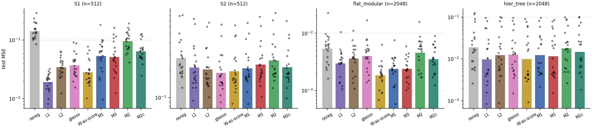
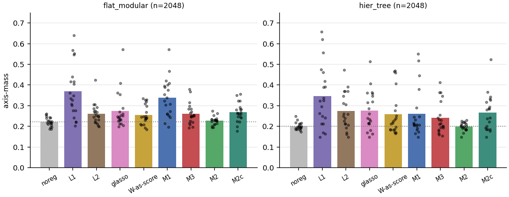
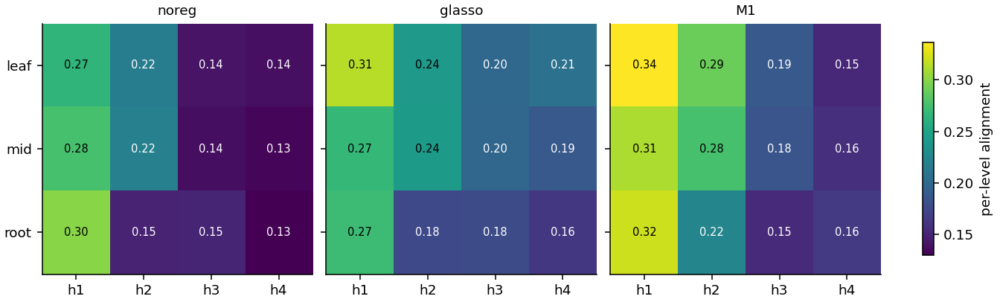
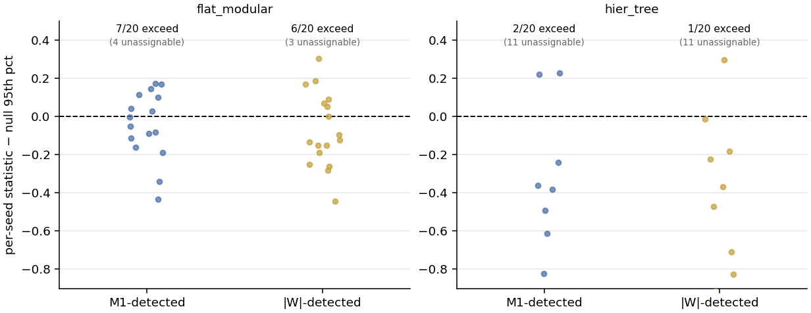
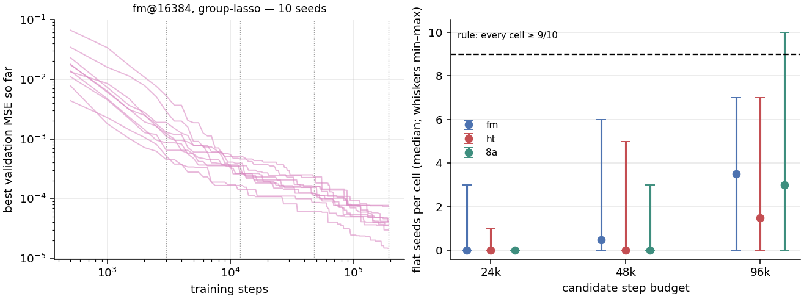

TL;DR. A neuron-to-neuron communication matrix \(A\), measured on an ordinarily trained network, does carry a task's module structure — planted modules are recovered exactly, and two pipelined modules never merge (§3) — but on realistic nets the modules live in rotated subspaces, off the neuron axes a per-neuron code can name (§3.3).
Trained as a code prior in its causal form (§2), \(A\) acts as a centered adaptive \(\ell_1\) that concentrates each neuron's fan-in onto its code cluster — a closed-form mechanism (§6) whose measured effect matches group-lasso's, the measured content adding alignment only over an information-ablated W-as-score control, never over group-lasso itself (§5). The benefit is confined to a narrow low-data flat-modular regime (the large-sample regime is unmeasurable under this study's fixed training schedule, §7.1); it does not survive on the hierarchical task, uses detected modules no better than \(\lvert W\rvert\) does, and closes none of a compositional out-of-distribution gap (§7). The implication: measured communication is real signal but largely redundant with weight magnitude on these tasks, per-neuron codes remain the wrong object for rotated or hierarchical structure, and the objective the prior was meant to power is not justified on this evidence (§8).
1. Why a measured communication prior
In the objective this study revisits, the per-neuron codes \(\phi_i\) receive no task gradient, and each connection is priced by its weight magnitude — a static, data-free proxy for how much two neurons belong together. The companion forensics (a learned neuron representation does not make weights modular, the flat winning ticket under the microscope) show the consequence: the codes collapse or act only as a capacity-pruning bias, and the task's real modules sit in rotated subspaces that mix many neurons. The redesign studied here (C. Dovrolis) drops weight-magnitude pricing entirely: a measured, data-driven communication score \(A_{ij}\) shapes the network instead — neurons that consistently participate in the same computation should end up close, and connections that carry little communication should be cheap to remove.
The risk is built into the idea. Strong communication is not the same as shared module membership: in a hierarchy one module consumes the output of another, so a hierarchical task must contain strong inter-module (pipeline) edges, and a communication-based prior could weld pipelined modules together. Whether that happens depends entirely on whether \(A\) has community structure — dense within a module, sparse between. The first question is therefore whether a measured \(A\) carries that structure at all, on networks trained with the bare task loss (§3); only if it does is the prior worth training in its causal form to see what it does (§5), why (§6), and what it buys (§7).
Claims and evidence. The five findings that carry the study, each paired with the toughest control it was measured against:
| Claim | Evidence | Strongest control / caveat |
|---|---|---|
| Measured communication carries modular signal | S1 recovered exactly (ARI 1.000); S2 hierarchy recovered, root never merged (10/10 seeds) — §3.2 | \(\lvert W\rvert\) reads the same structure (S1 1.000, S2 0.912); measured \(A\) does not out-detect it |
| The realistic modules are rotated off the neuron axes | a rotated subspace reproduces the module (patch-\(R^2\) 0.92 flat) while axis-mass stays \(\approx0.23\) — §3.3 | a per-neuron code starts at a representational disadvantage |
| The trained prior concentrates fan-in | effective fan-in \(18.45\to9.48\), \(d_z=-1.88\) — §5.3, §6 | equivalent to group-lasso (TOST at margin \(d_z=0.8\)); not unique to measured communication |
| Measured content beats objective form, not structured sparsity | M1 beats the W-as-score control on axis-mass (\(d_z=0.54\)) — §5.3 | does not beat group-lasso on axis-mass (null, \(d_z=0.15\)) |
| Downstream gains are narrow | M1 beats group-lasso on flat_modular at \(n\le2048\) (\(d_z\) \(-1.28\dots-1.45\)) — §7.1 | sign-flips on hier_tree; large-\(n\) undecidable; no causal-use edge over \(\lvert W\rvert\); OOD closure \(\le7.2\%\) (null) |
2. Communication scores and the code prior
The proposed objective. Two regularizers join the task loss \(\mathcal{L}_{\text{task}}\) (mean-squared error throughout — these are regression tasks): an edge-suppression term that prunes weakly-communicating weights, and a contrastive module-detection term that organizes the per-neuron codes \(\phi\):
\[\begin{equation}\label{eq:total} \mathcal{L}_{\text{total}} = \mathcal{L}_{\text{task}}(W) \;+\; \lambda_{\text{sup}}\,\mathcal{R}_{\text{sup}} \;+\; \lambda_{\text{mod}}\,\mathcal{R}_{\text{mod}}, \end{equation}\] \[\begin{align} \mathcal{R}_{\text{sup}} &= \tfrac{1}{L}\sum_{\ell}\sum_{i,j}\big(1-\widetilde A^{(\ell)}_{ij}\big)\,\lvert W^{(\ell)}_{ij}\rvert, \label{eq:sup}\\[2pt] \mathcal{R}_{\text{mod}} &= \sum_{\ell}\sum_{i,j}\Big[\,\widetilde A^{(\ell)}_{ij}\,d_{ij} \;+\; \big(1-\widetilde A^{(\ell)}_{ij}\big)\,\max\!\big(0,\,m-d_{ij}\big)\Big],\quad d_{ij}=\lVert\phi_i-\phi_j\rVert, \label{eq:mod} \end{align}\]with \(\widetilde A^{(\ell)}_{ij}\in[0,1]\) the within-layer-normalized score and \(m\) a margin. The first term of \eqref{eq:mod} attracts the codes of strongly-communicating pairs; the second repels weakly-communicating pairs up to the margin, so the trivial collapse (\(d_{ij}\equiv0\)) leaves the repulsion positive and is no longer optimal — modules fall out as clusters of mutually-close codes.
Measuring communication. On each trained net we compute three candidate scores from the effective weights and the in-distribution activations \(a^{(\ell)}\) (sender \(j\) post-activation, receiver \(i\)):
\[\begin{align} \textbf{(M1)}\ & A^{(\ell)}_{ij}=\mathbb{E}_x\big|\,W^{(\ell)}_{ij}\,a^{(\ell)}_j\,\big|, \label{eq:m1}\\ \textbf{(M2)}\ & A^{(\ell)}_{ij}=\big|\mathrm{corr}_x\!\big(a^{(\ell)}_j,\,a^{(\ell+1)}_i\big)\big|, \label{eq:m2}\\ \textbf{(M3)}\ & A^{(\ell)}_{ij}=\mathbb{E}_x\Big|\,\tfrac{\partial \hat y}{\partial z^{(\ell+1)}_i}\cdot W^{(\ell)}_{ij}\cdot a^{(\ell)}_j\,\Big|. \label{eq:m3} \end{align}\]M1 is raw activation-weighted flow — the cheapest and most local reading of "how much does \(j\) drive \(i\)". M2 is co-activation: how correlated a sender and receiver fire, blind to the weight between them. M3 weights each edge by how much the network's output depends on it, through the output Jacobian \(\partial\hat y/\partial z_i\) (not the loss gradient, which vanishes at convergence) — the most task-aware and the most expensive. \(A=\lvert W\rvert\) (the incumbent proxy the redesign wants to replace) and a per-layer shuffle (negative control) bracket every score; a ceiling sets \(A=\) the planted 0/1 mask, confirming the detection pipeline works when \(A\) is perfect.
The causal form. As written, \(\widetilde A\) enters \eqref{eq:sup}–\eqref{eq:mod}
detached — a constant to the optimizer. The code term is then harmless but inert: in an
exploratory check (5 seeds, fixed hyperparameters, all four tasks) test MSE matches unregularized
training everywhere, the codes organize only weakly — input-code ARI, the agreement between the
trained code clusters and the input factor groups (1 = aligned, 0 = chance), spans 0.02–0.24 —
and axis-mass (1 = a module's subspace concentrates on single neurons,
\(\approx1/\text{width}\) = fully spread) never leaves its unregularized value \(\approx0.23\)
(results/analysis_followup.json). The reason is algebraic, not empirical: with \(A\)
detached and \(\phi\) absent from the forward pass, \(\mathcal{R}_{\text{mod}}\) contributes
zero weight gradient, so the weight trajectory is exactly the unregularized one (proposition
P-iv, §6; verified bitwise at scale in §5.3). The codes become a passive readout, not a prior.
Un-detaching \(A\) (the attraction term becomes a product of a \(W\)-function and a
\(\phi\)-function, so its gradient flows into both) and replacing max-normalization + \((1{-}A)\)
with a layer-mean normalization and a constant repulsion threshold \(c\) make the codes
causal:
where \(\overline{A^{(\ell)}}\) is the layer's mean score (a single scalar), so \(\widehat A\) has mean 1 and a pair attracts when \(\widehat A \gt c\), repels when \(\widehat A \lt c\). The codes are 8-dimensional, one per neuron, trained jointly with the weights; the margin is \(m=1\). This causal form has an exact consequence, derived in §6: the attraction term is a centered adaptive \(\ell_1\) that should pull each neuron's fan-in onto its own code cluster — the prediction §5.3 then tests directly. \(\mathcal{L}_{\text{task}} + \lambda_{\text{mod}}\mathcal{R}_{\text{mod}}^{\,\text{v2}}\) is the objective every trained arm below uses, with the score named by the condition: M1, M3, M2c (co-activation in the constant-\(c\) form), W (\(A=\lvert W\rvert\) in the same form — the form-matched, information-ablated control: if it matches M1, the form of the prior suffices and the measured content adds nothing), and M2 (co-activation keeping its bounded \((1{-}A)\) complement). The suppression term \eqref{eq:sup} stays out of the base objective and is priced separately by an ablation (§5.4): it presumes the high-\(A\) edges are the ones to keep, exactly the assumption §3 tests first.
Baselines. Throughout: noreg (bare task loss), \(\ell_1\), \(\ell_2\), and group-lasso ("glasso" in tables) — a structured penalty whose groups are each neuron's fan-in, so it prunes whole neurons: the apt competitor for a method claiming neuron-level structure, and the comparator fixed in advance for the sample-efficiency test (§7.1) as the toughest structured baseline.
The alphabet. Every trained arm and control:
| Name | What it is | Role |
|---|---|---|
| M1 | \(\mathbb{E}_x\lvert W_{ij}a_j\rvert\) — activation-weighted flow \eqref{eq:m1} | local, cheapest measured score |
| M2 / M2c | \(\lvert\mathrm{corr}(a_j,a_i)\rvert\) — co-activation \eqref{eq:m2} (M2c = constant-\(c\) form) | weight-blind measured score |
| M3 | output-Jacobian-weighted flow \eqref{eq:m3} | task-aware measured score (most expensive) |
| W | \(A=\lvert W\rvert\) in the same objective | form-matched, information-ablated control |
| shuffle / ceiling | per-layer-permuted \(A\) / the planted 0/1 mask | negative control / detection ceiling |
| noreg, \(\ell_1\), \(\ell_2\), glasso | bare loss; weight penalties; fan-in-grouped structured sparsity (group-lasso) | baselines — group-lasso the toughest |
3. Module structure in the communication matrix
The validation question is whether a measured \(A\), read from an ordinarily trained network, carries the information needed to recover the task's modules — including across the pipeline edges of a hierarchy. Two planted testbeds supply exact ground truth, and a realistic setting asks the same question where it ultimately matters.
3.1 Planted testbeds
The planted nets are masked MLPs: every layer's weight carries a fixed \(0/1\) mask and the forward pass uses the effective weight \(W\odot\text{mask}\), so the module of every neuron and every inter-module edge is fixed by construction. Each module's sub-function is a fixed random 2-layer teacher MLP (\(\text{in}\to12\to1\), tanh — deliberately distinct from the student's GELU); inputs are \(\mathcal{N}(0,1)\), targets are standardized per column, and we use \(G{=}4\) modules with \(f{=}4\) input dims each. Every net here — planted and realistic alike — is trained on the bare task loss (no regularizer), 10 seeds, each seed redrawing the teachers (or, for S3, the task instance and init); all seeds passed their fit checks (planted test \(R^2\): S1 0.998, S2 0.970 against a 0.90 bar; details in Appendix A).
| Topology (layer widths) | Masks | Inter-module edges | Neurons | Modules | |
|---|---|---|---|---|---|
| S1 | \(16\to48\to48\to4\) | block-diagonal at every layer | none | 116 | 4 |
| S2 | \(16\to48\to4\to24\to1\) | block-diagonal, except leaf-scalar\(\to\)root-hidden which is full | 96 (\(4{\times}24\)) | 93 | 5 |
| S3 | \(24\to64\to64\to1\) | none (dense) | dense (unmasked) | 153 | 4 |
S1 — disjoint modules poses the necessary condition: \(G\) independent sub-nets on
disjoint input groups, \(G\) separate outputs, no inter-module edges anywhere; each module computes
\(y_g=T_g(x_g)\). If \(A\) cannot see these modules, nothing else matters.
S2 — a hierarchy with a reusability bottleneck poses the decisive one: \(G\) leaf
sub-nets each emit one scalar \(s_g\); the scalars feed a shared root through a full
leaf-scalar\(\to\)root-hidden layer — the only inter-module wiring — and the target is
\(y=R(T_1(x_1),\dots,T_G(x_G))\). Ground truth is \(G{+}1\) modules (four leaves + root), and the
S1\(\to\)S2 contrast isolates exactly the pipeline-merging risk of §1.
S3 — realistic drops the scaffolding: the standard \(24\to64\to64\to1\) GELU MLP on
flat_modular and hier_tree (24-dim inputs: 8 signal + 16 nuisance,
\(n_{\text{train}}=2048\)), where only the input neurons carry ground-truth labels (their factor
groups).
Detection and metrics. We stack the per-layer \(\widetilde A\) (within-layer max-normalized) into one symmetrized neuron graph and detect communities: spectral clustering with known \(k\) for S1/S2 (isolating "does \(A\) carry the signal" from "can clustering find \(k\)") and Louvain (which chooses \(k\)) for S3. Recovery is scored by the Adjusted Rand Index (ARI; \(1\) = perfect agreement with the ground-truth partition, \(0\) = chance) and by normalized mutual information (NMI, same scale); we also track the recovered community count, the block contrast \(B(A)=\overline{A}_{\text{within}}/\overline{A}_{\text{between}}\) (mean within-module over mean between-module edge weight), whether S2's root is absorbed into a leaf community, and, for S3, the input-group ARI (do the input neurons cluster by factor group?).
3.2 Planted recovery and pipeline separation
On S1 every measured score recovers the planted modules exactly — ARI \(=1.000\), NMI \(=1.000\) — far above the shuffle control (ARI \(=0.013\)) and matching the planted-mask ceiling (Fig. 1, left). On S2, the decisive test, the measured scores recover the hierarchy with ARI \(0.88\!-\!0.89\); the choose-\(k\) detector finds exactly \(G{+}1=5\) communities in 10/10 seeds (M1, M2); and the root keeps its own community in 10/10 seeds for every score — it is never absorbed into a leaf (Fig. 1, right). Transitive merging does not happen: within-module density (block contrast \(B\approx6\!-\!9\)) dominates the single high-\(A\) interface, so community detection holds the root apart even though the contrastive term \eqref{eq:mod}, alone, would not.
The information is there — and the \(\lvert W\rvert\) control
reads the same structure, matching the scores on S1 (ARI 1.000) and edging them on S2 (0.912 vs
0.883–0.893), a parity §8 returns to. Magnitude-prune-then-detect variants (keep the top half of
each layer's weights, then detect) were also run for every score: S1 stays perfect while S2
recovery drops (M3 0.88 → 0.73) — pruning keeps the high-magnitude bottleneck edges and drops
weak within-module ones (results/analysis.json). (An expectation stated before the runs
— that M3, the output-aware score, would be strongest and M2 the most merge-prone — did
not hold: M3 is weakest on S2, and no score ever merges the root.)

3.3 Rotated modules in realistic nets
On S3 the input-group ARI is weak and high-variance (best score: 0.36 on
flat_modular, 0.24 on hier_tree) — individual neurons do not sort into
modules. Three rotation-aware subspace probes say why: axis-mass (mean squared
largest single-neuron loading of a module's estimated hidden subspace — \(1\) = neuron-aligned,
\(\approx\!1/\text{width}\) = fully spread), patch_r2 (the causal \(R^2\) with which
patching only a module's rotated subspace reproduces the teacher's output response to
resampling that module's inputs), and lane_diag (the fraction of a module's layer-1
subspace energy that flows into its own layer-2 subspace); all adapted from
the flat winning ticket under the microscope.
patch_r2 recovers the modules
from rotated subspaces (0.92 flat; 0.47 mean / 0.59 median hier), far above a rotation-blind
control that patches a random subspace of matched dimension (\(\approx0.19\) flat, strongly negative
on hier), while axis-mass sits at \(\approx0.23\) — not single-neuron-aligned (Fig. 2; the
rotation-blind control distinguishes genuine module structure from a random-subspace artifact, but the
pre-registered comparison against the \(\lvert W\rvert\)-thresholded net was not run, so this reading
is real-vs-random, not measured-vs-\(\lvert W\rvert\)). The structure is real but rotated off the
neuron basis, corroborating that study's rotated-modules finding:
per-neuron codes start at a representational disadvantage, and axis-mass becomes the
de-rotation readout for everything that follows.

4. Setup
All trained comparisons (§§5–7) share one design; the paragraphs below carry the operative facts, with measurement detail in Appendix A.
Cells. flat_modular and hier_tree at
\(n_{\text{train}}\in\{512,\dots,16384\}\), plus the planted S1/S2 at \(n=512\); the four core
analysis cells are fm@512, fm@2048, ht@1024, ht@2048. hier_tree uses a five-layer
net — one hidden layer per hierarchy level, selected by a depth pilot on validation FVU (fraction of
variance unexplained, MSE\(/\mathrm{Var}(y)\); Appendix A) — plus a depth-3 continuity cell
(§9).
Selection. Every condition is validation-picked over 9 explicit hyperparameter configurations per cell (\(\ell_1/\ell_2\)/glasso/M2 ladders; \(\lambda_{\text{mod}}\in\{0.05,0.2,0.6\}\times c\in\{0.5,1.0,1.5\}\) for M1/M3/W/M2c); magnitude ladders (\(\lambda\), \(\lambda_{\text{mod}}\)) shift down one decade at \(n_{\text{train}}\ge4096\) (the threshold \(c\) is not shifted), and a ladder is extended when a pick sits at its grid edge in \(\gt20\%\) of cases (at most twice; residual edge-pinning is reported, §9).
Splits. Disjoint train / validation (selection and early stopping only) / in-distribution test of 65,536 points, touched once per condition and seed; an extrapolation readout is reported separately. Test size, the raw-MSE primary readout, and the split policy were fixed from a dedicated measurement study before any comparison ran (Appendix A).
Replication. 20 fresh seeds (10–29; 30 where noted), disjoint from every previously inspected draw; each seed redraws teachers/task and init.
Convergence. At \(n\ge4096\) the step budget rises with a convergence check, and a cell failing the check is excluded and reported — the consequences for the large-sample regime are in §7.1.
Statistics. Paired across seeds — Wilcoxon signed-rank + Cohen's \(d_z\), Holm-corrected within each planned family (\(\alpha=.05\)); equivalence via TOST (two one-sided tests) at margin \(d_z=0.8\); outcomes between superiority and equivalence are reported as underdetermined. Figures show point estimates with paired \(d_z\)/\(p\) annotated; inference is carried by the paired tests.
Artifacts. Weight/code checkpoints for §§5.2–5.6 come from a second training pass at the picked configuration that must reproduce the first pass's validation MSE (relative tolerance \(10^{-6}\)).
Evidence classes. Comparisons under rules fixed before the runs are the default and carry the statistics above; results labeled exploratory (the §2 detachment check, the §7.2 pilot) or descriptive (stated per use) carry no planned family.
Provenance. Every number traces to src/analyze*.py →
results/*.json (file map in Appendix A).
5. Effects of the trained prior
Training \(\mathcal{L}_{\text{task}}+\lambda_{\text{mod}}\mathcal{R}_{\text{mod}}^{\,\text{v2}}\)
\eqref{eq:modv2} moves held-out error and alignment together. On test error (Fig. 3, a
descriptive overview), every regularizer beats no-regularization, and
the coded conditions sit inside the pack: on S1 plain \(\ell_1\) leads (geo-mean MSE 0.019 vs noreg
0.142, with W-as-score at 0.028 and M1 at 0.054); on S2 everything clusters within 0.19–0.27
(glasso best); on flat_modular@2048 W-as-score leads (0.0018) with M1/M3 at 0.0024; on
hier_tree@2048 \(\ell_1\) and W lead (0.0097/0.0099) with M1 at 0.0124. No measured
score leads any panel, and the per-seed spread (the dots' vertical bands, especially on S2 and
hier_tree) is task-draw difficulty heterogeneity, not evaluation noise
(Appendix A).
On alignment (Fig. 4), the average lifts over noreg's rotated floor
(axis-mass 0.22/0.20) are modest and — as elsewhere — not specific to the measured
scores: plain \(\ell_1\) tops both tasks (0.37/0.35), M1 matches it on flat_modular
(0.34) but not hier_tree (0.26), and the per-seed clouds split visibly into a low mode
near the floor and a high mode well above it.


5.1 Bimodal alignment
The two-mode split in Fig. 4 is real, and it is not a property of the coded objective. A confirmation on 30 fresh seeds per cell (full grids, a 2-component-GMM parametric-bootstrap likelihood-ratio test at \(\alpha=.05\) per cell; power 0.94–1.00 at the observed mode geometry, computed before the runs):
| cell | mean axis-mass | GMM LRT | \(p\) | outcome | ramp − const (\(p\)) |
|---|---|---|---|---|---|
| fm@512 / M1 | 0.554 | 1.20 | .66 | resolved (unimodal) | −0.031 (.31) |
| fm@2048 / M1 | 0.379 | 13.9 | .018 | persists | −0.030 (.006) |
| fm@2048 / glasso | 0.274 | 23.7 | .002 | persists | −0.005 (.003) |
Bimodality persists at fm@2048 for M1 and for group-lasso — a property of the loss landscape, not of \eqref{eq:modv2}. Ramping the penalty from 0 over the first half of training does not resolve it: the ramp arm's own bimodality test still rejects at both persisting cells (\(p=.004\) M1, \(.002\) group-lasso; two fitted modes), while shifting axis-mass slightly down — the split is not an artifact of switching the penalty on at full strength. Attribution (a deliberately different replication unit): at the modal picked configuration (\(\lambda_{\text{mod}}=0.05\), \(c=1.0\)), all ten fixed-task inits and all ten fixed-init task redraws landed in the same mode — zero flips — so the split does not reproduce at a single fixed configuration and its driver (init vs task draw) stays indeterminate. Mode membership does relate to fit quality at fm@2048/M1 — the low-alignment mode fits slightly better (geo-mean val MSE 0.0024 vs 0.0040, Mann–Whitney \(p=.049\); test MSE \(p=.019\)) — but not at fm@2048/glasso (\(p=.16/.10\)); alignment is not the happy mode of a fit lottery, and if anything it costs a little error. (Per-step train loss is not recorded in the sweep scalars, so best-validation MSE stands in for it.)
5.2 Code organization
The trained codes \(\phi\) neither collapse nor scatter. On the second-pass artifact set, a code set is collapsed if its effective rank \(\le2\) (Roy–Vetterli entropy effective rank of the code Gram spectrum — the exponential of the Shannon entropy of the normalized eigenvalues), and organized if effective rank \(\gt2\) and the code-cluster/detected-community ARI beats a shuffled-code null (communities from the M1-score detection pipeline run per net; Holm over 6 coded conditions × 2 cells = 12 tests). All 12 come out organized (every Holm \(p=1.1\times10^{-5}\)); median effective rank 6.9–7.8. The clustered geometry is fine-grained: the silhouette-chosen cluster count saturates its search cap (median \(k=8\) in all 12 cells), and the pairwise code distances hug the repulsion margin \(m=1\) (quartiles 1.00/1.00/1.01 at fm@2048/M1) — many small clusters held apart at the margin. The alignment magnitudes vary widely:
| ARI − shuffled null (mean, n=20) | M1 | M2c | W | M1-detached | M2 | M3 |
|---|---|---|---|---|---|---|
| flat_modular@2048 | 0.476 | 0.415 | 0.432 | 0.242 | 0.045 | 0.103 |
| hier_tree@2048 | 0.382 | 0.095 | 0.204 | 0.393 | 0.159 | 0.101 |
M1-detached codes organize onto the communication graph's communities even when they cannot shape the weights (0.24 fm, 0.39 ht) — the passive embedding of P-iv (§6) — so "organized codes" alone certify nothing about the weights.
5.3 Fan-in concentration
The trained prior concentrates each neuron's fan-in, to group-lasso's level. The statistic — adopted from bounded fan-in from the network — is effective fan-in: the participation ratio of each hidden neuron's incoming weight row (the effective count of inputs it listens to — \(k\) for \(k\) equal-magnitude weights, 1 for a single dominant one), gauge-normalized to remove per-neuron rescaling freedom and averaged over receiving neurons; one scalar per net, computed on the second-pass checkpoints of the four core cells, 80 paired nets per contrast. Four planned comparisons:
- Concentration. M1 concentrates fan-in versus noreg: mean row participation ratio 18.45 → 9.48, paired \(\Delta=-8.97\), \(d_z=-1.88\), \(p=9\times10^{-15}\) (Fig. 5).
- Detachment check. M1-detached's second-pass weights equal noreg's bitwise in 80/80 nets — its fan-in and spectral statistics are noreg's exactly (Fig. 5) — the algebraic corollary P-iv (§6), verified at scale.
- Group-lasso equivalence. Fan-in under M1 is TOST-equivalent to group-lasso at margin \(d_z=0.8\) (\(p=8.8\times10^{-9}\); \(d_z=-0.10\)) — and the companion comparison, axis-mass superiority over group-lasso, does not fire: pooled one-sided \(p=.20\), \(d_z=0.15\), itself TOST-equivalent at the same margin (\(p=6.9\times10^{-8}\)) — a genuine null, not a power failure. A dissociation ("fan-in equal yet alignment better, so fan-in bounding cannot be the whole mechanism") is not established.
- The information control. Against W-as-score — the same objective with \(A=\lvert W\rvert\) — fan-in is TOST-comparable (\(p=7.8\times10^{-10}\), \(d_z=0.04\)) and M1's axis-mass is superior (\(p=5.5\times10^{-6}\), \(d_z=0.54\)): the measured content of \(A\) does work its form alone cannot.
This combination was not among the outcomes anticipated before the runs, and everything group-lasso-equivalent about M1 is compatible with fan-in bounding as the sufficient mechanism — M1 behaves as an adaptive fan-in concentrator of group-lasso's strength — while the measured-\(A\) content demonstrably adds alignment only against the form-matched control, not against the strong structured baseline. Descriptively, fan-out concentrates the same way (column participation ratio: noreg 15.7 → M1 7.6, W 6.9, glasso 8.1; M1-detached equals noreg exactly), and the spectral participation ratio — the same statistic on the weight matrix's squared singular values — orders the same way: noreg 35.6, M1 21.0, W 19.1, glasso 18.3. One caveat travels with all fan-in numbers: rescaling a hidden unit's fan-in and compensating in its fan-out — function-preserving under ReLU but not under GELU — moves the statistic by a median of 2.20 row-PR units, small next to the effects read from it (e.g. \(\Delta=-8.97\) above).

5.4 The suppression term
The prune term \(\mathcal{R}_{\text{sup}}\) \eqref{eq:sup} (detached, per-layer-max-normalized \(\widetilde A\)) earns a modest place on top of \eqref{eq:modv2}. A nested conditional ablation: the \(+\mathcal{R}_{\text{sup}}\) arm inherits the −arm's per-(cell, seed) val-picked \((\lambda_{\text{mod}},c)\) and val-picks \(\lambda_{\text{sup}}\) over six rungs — not budget-symmetric, which is conservative for "helps". One paired test per score pooling the 80 (cell × seed) replicates on axis-mass, Holm over the four scores; "helps" requires \(\ge2/4\) scores improving with no score's FVU worsening beyond \(d_z=0.8\). All four improve, and FVU moves, if anywhere, in the method's favor:
| score | \(\Delta\)axis-mass (+sup − −sup) | \(d_z\) | Holm \(p\) | FVU-change \(d_z\) |
|---|---|---|---|---|
| M3 | +0.105 | 0.73 | \(4.0\times10^{-8}\) | −0.17 |
| M2c | +0.075 | 0.67 | \(4.0\times10^{-8}\) | −0.04 |
| M1 | +0.040 | 0.30 | \(3.5\times10^{-4}\) | −0.11 |
| W | +0.033 | 0.34 | \(1.3\times10^{-3}\) | −0.42 |
The "helps" label is conditional on the −arm-optimal \((\lambda_{\text{mod}},c)\) (the +arm never re-tunes them jointly), and the gains are smallest for the two strongest scores (M1 +0.040, \(d_z=0.30\)).
5.5 Alignment across depth
Axis-mass reads alignment at the first hidden layer only — hier_tree's mid and root
levels went unmeasured. The remedy is per-level alignment: regress layer-\(\ell\) activations on the
level-\(\ell\) subfunction outputs (the task generator exposes them) to get each subfunction's
layer-\(\ell\) subspace, and report the full level × layer profile with no scalar collapse. On
planted nets the statistic is block-mass (subspace energy on the module's known neuron
block), and the metric is validated before use: on 10 ceiling seeds (the masked S2 nets of §3 —
exact two-level ground truth) versus 10 floor seeds (dense noreg on the same task), the ceiling
minimum exceeds the floor maximum at both levels (leaf 0.854 vs 0.376, scalar 0.759 vs 0.507 — no
overlap). Applied to the hier_tree@2048 depth-5 checkpoints of §5.2 (first measurement,
no comparative claim), Fig. 6 shows the profile: alignment falls with layer depth for
every level — the root's subfunctions are as axis-visible at h1 (M1 0.32) as the leaves' own
(0.34), and no hidden layer specializes in its mapped level (h1→leaf, h2→mid, h3→root; the fourth
hidden layer is surplus to the hierarchy). Per-neuron alignment on this task is a property of depth
in the network, not of position in the hierarchy: M1 lifts it modestly at the first two layers and
nowhere near the root. The hierarchy's deeper levels are now measurable — and nothing yet aligns
them.

hier_tree@2048, mean over 20 seeds:
the decay holds for every level and every condition, and no layer specializes in its mapped
level.5.6 Causal use of detected modules
That detection finds structure does not show the network uses it. Communities are detected by the §3 pipeline (\(\widetilde A\)-weighted layered graph, Louvain) from measured M1 and from \(\lvert W\rvert\), both on the same nets (the M1 arm's second-pass checkpoints at fm@2048 and ht@2048, seeds 10–29), each community assigned to the teacher module holding the plurality of its ground-truth-labeled nodes; tied or label-free communities are excluded and counted. Ablate a community, and measure how much the output's response to a factor group drops:
\[\begin{equation}\label{eq:damage} D[c,g] \;=\; \Big(\mathbb{E}_x\big[(f(x)-f(x^{(g)}))^2\big]\;-\;\mathbb{E}_x\big[(f_{-c}(x)-f_{-c}(x^{(g)}))^2\big]\Big)_{+}, \end{equation}\]where \(x^{(g)}\) resamples factor group \(g\) and \(f_{-c}\) is the net with community \(c\) ablated; the per-seed statistic is the mean over communities of the bounded contrast \(\text{own}/(\text{own}+\text{other}+10^{-12})\) with \(\text{own}=D[c,g(c)]\) and \(\text{other}\) the mean over \(g\neq g(c)\), evaluated on a dedicated in-range probe draw. The null: 200 size-matched random partitions per net; a cell's modules count as causally used iff the observed statistic exceeds the null's 95th percentile in \(\ge4/20\) seeds (exact binomial \(\alpha=.016\); the two cells are separate claims). A seed with zero assignable communities has an undefined statistic and counts as non-exceeding — conservative for the rule. The exclusions are substantial: on fm, 65/108 detected communities (M1) and 56/95 (\(\lvert W\rvert\)) are tied or label-free, with 4 and 3 zero-assignable seeds; on ht, 74/90 and 64/79, with 11 zero-assignable seeds in each arm — mixed-input communities are the norm, especially on the hierarchical task.
On flat_modular the detected modules are causally used — under both
detections (Fig. 7): M1-detected communities exceed the null in 7/20 seeds and
\(\lvert W\rvert\)-detected ones in 6/20 — both clear the bar. On hier_tree
neither does (2/20 and 1/20). The M1-vs-\(\lvert W\rvert\) contrast — the paired difference
of the per-seed statistics on the same nets — is null where modules are used at all (fm:
\(d_z=-0.03\), \(p=.82\), 16 measurable pairs); on ht the 9 measurable pairs run nominally
against M1 (\(d_z=-0.61\), \(p=.027\), a raw-\(\alpha\) descriptive note on a cell where
neither detection clears the bar). Detection finds load-bearing modules on the flat task, the
measured score confers no causal-use advantage over the proxy anywhere, and on the hierarchical task
neither view finds modules the network demonstrably uses at the leaf-group granularity.

flat_modular; neither
does on hier_tree.6. Mechanism in closed form
For M1 the trained prior's mechanism is exact, and it explains §5.3's measurements. Setting:
\(\mathcal{L}=\mathcal{L}_{\text{task}}+\lambda\,\mathcal{R}_{\text{mod}}^{\,\text{v2}}\) with
\eqref{eq:modv2}, score M1 \eqref{eq:m1} un-detached, layer-mean normalization
\(\widehat A=A/\overline{A}\), margin \(m\), threshold \(c\), and the implementation's per-layer
edge-mean. All four propositions are verified numerically on a \(4\to6\to1\) GELU micro-net with
3-dimensional codes (src/verify_item2a.py → results/item2a_toy.json).
P-i (attraction = weighted mean distance; centered adaptive \(\ell_1\)). The attraction term of layer \(\ell\) equals the \(A\)-weighted mean code distance \[\begin{equation}\label{eq:att} \mathcal{R}^{(\ell)}_{\text{att}} \;=\; \operatorname{mean}_{ij}\big[\widehat A^{(\ell)}_{ij} d_{ij}\big] \;=\; \frac{\sum_{ij} A^{(\ell)}_{ij}\, d_{ij}}{\sum_{ij} A^{(\ell)}_{ij}} \;=\; \bar D_A^{(\ell)}, \end{equation}\] which is invariant under a per-layer rescale \(W^{(\ell)}\!\to\!sW^{(\ell)}\) (for M1, \(A\) scales linearly in \(\lvert W\rvert\), so numerator and denominator scale together). Its gradient in the same layer's weights is exactly \[\begin{equation}\label{eq:attgrad} \frac{\partial \bar D_A^{(\ell)}}{\partial W^{(\ell)}_{ij}} \;=\; \frac{\mathbb{E}\lvert a_j\rvert\,\operatorname{sign}(W^{(\ell)}_{ij})}{\sum A^{(\ell)}} \,\big(d_{ij}-\bar D_A^{(\ell)}\big), \end{equation}\] with no own-layer path term — the sender activity \(a_j\) does not depend on \(W^{(\ell)}\).
The first equality in \eqref{eq:att} is algebra: \(\operatorname{mean}[({A}/{\overline A})d]=\overline{Ad}/\overline A=\sum Ad/\sum A\). For M1, \(A_{ij}=\lvert W_{ij}\rvert\,\mathbb{E}\lvert a_j\rvert\), so \(\partial A_{ij}/\partial W_{ij}=\mathbb{E}\lvert a_j\rvert \operatorname{sign}(W_{ij})\) and the quotient rule on \(\sum Ad/\sum A\) gives \(\partial \bar D_A/\partial W_{ij}=(\partial A_{ij}/\partial W_{ij})(d_{ij}\sum A-\sum Ad)/(\sum A)^2 =(\partial A_{ij}/\partial W_{ij})(d_{ij}-\bar D_A)/\sum A\). Within layer \(\ell\), \(a_j\) is a function of earlier layers only.
The closed form matches the implemented term to \(10^{-5}\); the layer-0 and layer-1 own-weight gradients match autograd to \(2.6\times10^{-7}\) and \(1.2\times10^{-7}\) relative error; the layer-0 term is invariant to a 3× weight rescale. Edges whose endpoint codes are farther apart than the layer's \(A\)-weighted average are shrunk, closer-than-average edges are grown — a signed redistribution, not a uniform pull to zero. The term does exert a real upstream force on earlier layers' weights through \(\mathbb{E}\lvert a_j\rvert\): on the micro-net, layer 1's term puts a gradient on \(W^{(0)}\) with 65% the norm of layer 0's own attraction gradient — the per-layer picture composes, but cross-layer coupling is not negligible.
P-ii (code-side spring embedding with watershed \(c\)). For a pair \((i,j)\) at distance \(d_{ij}\), the penalty's radial derivative is \[\begin{equation}\label{eq:codeforce} \frac{\partial}{\partial d_{ij}}\Big[\widehat A_{ij} d_{ij} + c\max(0, m-d_{ij})\Big] \;=\; \widehat A_{ij} - c\,\mathbb{1}[d_{ij}\lt m], \end{equation}\] so the codes of a pair are pulled together iff \(\widehat A_{ij}\gt c\) inside the margin, pushed apart iff \(\widehat A_{ij}\lt c\), and always pulled together beyond the margin. Fixed points of the code flow therefore cluster codes by the communication graph's \(\widehat A\gt c\) communities.
Differentiate the two terms in \(d\); the relu contributes \(-c\) on \(d\lt m\) and 0 beyond. A positive radial derivative means the penalty decreases as \(d\) shrinks — gradient descent on the codes moves them together; negative, apart. Verified on the micro-net at \(\widehat A \in\{0.5c, 1.5c\}\), \(d\in\{0.5, 1.5\}\).
P-iii (rich-get-richer ⇒ fan-in concentration). Combine P-i and P-ii: a strong edge (\(\widehat A\gt c\)) pulls its endpoint codes together (P-ii), which lowers \(d_{ij}\) below \(\bar D_A\), which flips its P-i rate from shrinkage to growth — while cross-cluster edges (codes held \(\ge m\) apart) sit above \(\bar D_A\) and shrink. Each receiving neuron's incoming weight mass therefore concentrates onto senders in its own code cluster: the observable signature is per-neuron effective fan-in falling toward the cluster size.
In a two-cluster caricature with within-cluster distance \(d_w \lt \bar D_A \lt d_x\) (cross-cluster), \eqref{eq:attgrad} gives within-edges a negative \(\ell_1\)-rate (growth) and cross-edges a positive one (shrinkage), monotone in \(d-\bar D_A\); iterating with P-ii's clustering tightens \(d_w\) and the split self-reinforces. Verified as a trained signature on the micro-net's planted 2-block task: the within/cross block mean-\(\lvert W\rvert\) ratio rises from 1.93 (noreg) to 2.45 (un-detached M1) at equal steps. The at-scale measurement is §5.3 (\(d_z=-1.88\) vs noreg).
P-iv (detachment corollary). With \(A\) detached and the codes absent from the forward pass, \(\mathcal{R}_{\text{mod}}^{\,\text{v2}}\) contributes zero gradient to every weight, so the weight trajectory under \(\mathcal{L}_{\text{task}}+\lambda\mathcal{R}_{\text{mod}}^{\,\text{v2}}\) is exactly the unregularized trajectory (same init, same data order) — the codes become a passive embedding of the frozen communication graph.
Detached \(A\) is a constant w.r.t. \(W\); \(d_{ij}\) depends only on \(\phi\); hence \(\partial\mathcal{R}_{\text{mod}}/\partial W\equiv0\), and the \(W\)-updates of AdamW (per-parameter, no cross-parameter coupling) coincide step by step with noreg's. Verified bitwise on the micro-net (300 steps, max \(\lvert\Delta W\rvert=0\)) and at scale on all 80 artifact pairs (§5.3).
micro-net check (results/item2a_toy.json) | value |
|---|---|
| P-i closed form \eqref{eq:att} = implemented term | match (\(\lt10^{-5}\)) |
| P-i own-layer gradient \eqref{eq:attgrad} vs autograd, layer 0 / layer 1 (rel. err) | \(2.6\times10^{-7}\) / \(1.2\times10^{-7}\) |
| P-i layer-0 term under 3× weight rescale | invariant (\(\lt10^{-5}\)) |
| upstream path share: \(\lVert\partial\mathcal{R}^{(1)}_{\text{att}}/\partial W^{(0)}\rVert / \lVert\partial\mathcal{R}^{(0)}_{\text{att}}/\partial W^{(0)}\rVert\) | 0.65 |
| P-ii force sign at \(\widehat A=1.5c\) / \(0.5c\) (inside margin), \(0.5c\) (beyond) | attract / repel / attract |
| P-iii within/cross block ratio, noreg → un-detached M1 | 1.93 → 2.45 |
| P-iv max \(\lvert W_{\text{detached}}-W_{\text{noreg}}\rvert\) after 300 steps | 0.0 (bitwise) |
The precise form of the "it is pruning with threshold \(c\)" intuition is therefore P-iii's prediction — per-neuron fan-in concentration, each receiving neuron's incoming mass collapsing onto senders in its own code cluster — which is what §5.3 measures at scale, at group-lasso's strength.
7. Performance
7.1 Sample efficiency
The estimand: the per-\(n\) paired gap in log test MSE between M1 (the comparator fixed in
advance as the best-performing measured score) and val-picked group-lasso (the toughest baseline),
at \(n_{\text{train}}\in\{512,\dots,16384\}\), Holm per task over the six per-\(n\) tests
(Fig. 8). flat_modular: a real, shrinking payoff regime. M1 beats group-lasso
at every testable \(n\): mean gap −0.93 (\(d_z=-1.28\)) at 512, −0.66 (\(d_z=-1.43\)) at 1024,
−0.52 (\(d_z=-1.45\)) at 2048 — every Holm \(p=1.1\times10^{-5}\), 20 pairs each — with the gap
shrinking as data grows. hier_tree: the sign flips. At 512 group-lasso beats M1
(+0.55, \(d_z=+0.98\), Holm \(p=.0029\), 19 pairs; this cell carries a residual group-lasso grid-edge
pin, 14/20); 1024 and 2048 are ties (Holm \(p=1.0\)). On both tasks the \(n\ge4096\) rungs fell to
the convergence bar — 997 of 1080 fits at \(n\ge4096\) fail it — so whether the gap vanishes,
shrinks, or persists at scale is undecidable from these runs, and what the data do support is a
payoff regime at flat_modular \(n\le2048\). Secondary readouts tell the same story
with two shadings: against plain \(\ell_1\)
the flat-task advantage is thinner and clear only at 2048 (paired log-MSE gap −0.21,
\(d_z=-0.73\); near zero below), while hier_tree is mixed in both directions; the
labeled extrapolation readout mirrors the in-distribution split (fm gaps −0.64…−0.39, \(d_z\)
−1.3…−1.6; ht +0.30 at 512, then ties); and M1's input-code ARI declines as data grows (fm
0.48 → 0.27) — per-\(n\) values in results/fv3_analysis.json.

The large-sample regime has no feasible converged budget under this training schedule. A budget diagnostic traced full validation curves to 192,000 steps — 64× the small-\(n\) budget — on both tasks at \(n\in\{4096,16384\}\) and on the §7.2 substrate (10 seeds per cell at the modal validation-picked and one-rung-down configurations; no test evaluation). Convergence in the exclusion rule's sense — validation improving \(\lt0.5\%\) per doubling of the budget, sustained to 192k — is reached by at most 7 of 10 seeds in the least-constrained fm/ht cells and 0 of 10 in the hardest; one cell converges outright (the §7.2 substrate's M1-modal configuration, 10/10). In every non-converged cell the worst seed still improves 24–82% per doubling even from 96k to 192k steps, and group-lasso at fm@16384 halves its validation MSE at every doubling out to 192k (Fig. 9). Raising the budget cannot clear the convergence bar this design imposes; settling the trend at scale requires a different training schedule (a decaying learning rate, or an optimizer change) — outside the fixed training identity every comparison here shares.
The same curves bound the small-\(n\) readouts: at
the 3,000-step budget the anchor cells improve ≈10–96% (worst seed) per doubling, so the §7
comparisons — the fm payoff regime included — are equal-budget comparisons at the stated budgets,
not converged-fit comparisons (per-cell tables in results/fv4pilot_budget.json).

7.2 Module reuse and composition
De-rotation would matter if it bought reuse. Because linear probes are
rotation-invariant (a linear readout undoes any change of basis for free), every functional test is
built on axis-sensitive operations — restricting a readout to a module's neurons, or
composing per-module sparse readouts. An exploratory pilot (fixed mid-grid hyperparameters,
previously seen seeds; kept at results/exploratory/ and cited as motivation only)
found in-distribution reuse: readouts restricted to a module's neurons and fit on
\(n_{\text{ft}}\) labeled points beat full-width readouts (gap −0.31 MSE at \(n_{\text{ft}}=16\)),
and zero-shot composition from per-module readouts ran ~35% better than the strongest baselines
(0.135/0.137 vs 0.196–0.217).
The clean replication: the pilot's per-output substrate (K = 4 disjoint input groups + 16 nuisance dims, one output per module, net \(24\to64\to64\to4\), \(n_{\text{train}}=4096\)), arms {noreg, \(\ell_1\), \(\ell_2\), glasso, M1, M2c}, full grids, 30 fresh seeds; frozen trunk; module→neuron map by \(\text{argmax}_k\,\mathbb{E}_x|\partial\text{out}_k/\partial h^1_i|\); ridge readouts (\(\lambda=10^{-2}\)) fit on a dedicated fresh in-range probe pool; gap at \(n_{\text{ft}}\) = restricted-readout MSE − full-readout MSE (negative = the relevant modules' neurons suffice); composition error = MSE of summed singleton readouts over all non-empty module subsets. The replication is unmeasured at this study's convergence bar: the bar binds every \(n\ge4096\) cell, this substrate included, and only 4/180 of these fits pass it at the raised step budget (\(\ell_1\) 1, glasso 1, M2c 2; noreg, \(\ell_2\), M1 all 0) — the cells are excluded, and the four planned comparisons are reportable only as an equal-step-budget descriptive readout. The §7.1 budget diagnostic shows the substrate shares the pathology asymmetrically: at its modal configuration M1 reaches flatness in 10/10 seeds by 96k steps while the unregularized and group-lasso arms never do (worst-seed 79–82% improvement per doubling remaining) — so even an extended budget would compare a converged arm against unconverged ones:
| leg (n=30, descriptive) | mean | \(d_z\) | Holm \(p\) | direction |
|---|---|---|---|---|
| M1 gap@16 \(\lt0\) | −0.130 | −0.38 | \(3.1\times10^{-4}\) | consistent with pilot |
| M1 gap@32 \(\lt0\) | +0.005 | +0.04 | .81 | null |
| (M1 − glasso) gap difference@32 \(\lt0\) | +0.031 | +0.21 | 1.0 | null |
| composition M1 \(\lt\) glasso | +0.014 | +0.20 | 1.0 | null |
Only the gap@16 direction is consistent with the pilot; the other three legs are directionally null, and group-lasso's own gap@32 — likewise descriptive — is itself significantly negative (\(d_z=-0.46\), \(p=.022\); the pilot had it at \(d_z\approx-0.03\)), so the restricted-readout advantage, where it appears, is not specific to the communication prior. No replication claim in either direction is supported by these numbers.
7.3 Compositional OOD
Two prior results predict opposite outcomes here. A companion study — confinement, not endpoint sparsity, buys sample efficiency — found that structural modularity alone buys no compositional OOD (only functional confinement closed that gap), while §7.2's in-distribution reuse effect suggests the prior might. The probe: 4 inputs in two groups, teacher \(y=f_1(x_1)+f_2(x_2)\), net \(4\to64\to64\to1\); training draws only the correlated range-halves (A,A)/(B,B), the test set covers all four quadrants; the OOD readout is MSE on the unseen (A,B)/(B,A) quadrants, validation and selection never seeing them. An oracle (same architecture, trained on all-quadrant draws, val-picked on its own ladder) sets the ceiling; per seed \(s\) and method,
\[\begin{equation}\label{eq:closure} \text{closure}_s \;=\; \frac{\mathrm{MSE}^{\text{OOD}}_{s,\text{noreg}}-\mathrm{MSE}^{\text{OOD}}_{s,\text{method}}}{\mathrm{MSE}^{\text{OOD}}_{s,\text{noreg}}-\mathrm{MSE}^{\text{OOD}}_{s,\text{oracle}}}, \end{equation}\]with a method passing iff its one-sided test of median closure \(\gt50\%\) rejects under Holm (five comparisons per \(n_{\text{train}}\) cell: four closure tests + the headline M1-vs-glasso OOD difference). The precondition holds — the noreg−oracle OOD gap is significant in both cells (\(p=9.5\times10^{-7}\); one seed per cell excluded on a tiny-denominator rule) — so there is a real gap to close. No method closes any of it (Fig. 10): median closures sit at +0.1%/+0.1% (\(\ell_1\)), +0.7%/+0.4% (glasso), −3.1%/+7.2% (M1), +0.7%/−8.0% (M2c) at 512/2048 — at most 7.2% against a 50% bar; every Holm \(p=1.0\). The headline is likewise null: M1 vs glasso OOD MSE differs by \(d_z=+0.36\) (\(p=.28\)) at 512 and \(d_z=-0.01\) (\(p=.62\)) at 2048. The communication prior's in-distribution reuse does not transfer to the input-decorrelation OOD axis — that companion study's skepticism, replicated in a different regularizer family.

8. Conclusions
Measured communication is real signal — planted recovery is exact, pipelined modules never merge, and on the flat task the detected modules are demonstrably load-bearing — but every test that pitted it against weight magnitude found parity: detection (§3.2), causal use (§5.6), and the fan-in mechanism (§5.3). The bar fixed before the study for building on a measured score was out-detecting \(\lvert W\rvert\) by \(\Delta\text{ARI}\ge0.15\), paired across seeds (Wilcoxon + \(d_z\)); the observed margins were \(\le0\) on the planted nets and +0.16 / +0.06 on the realistic tasks with neither pairing significant (\(p=.105/.68\)) — so measured \(A\) did not out-detect \(\lvert W\rvert\), and that evidence does not justify building the original three-term objective \eqref{eq:total}. The one place measurement demonstrably beats form is alignment against the W-as-score control (\(d_z=0.54\)): the content does extra work, just not work that group-lasso does not already do.
The causal prior's operative mechanism is adaptive fan-in concentration (§5.3, §6) — a structured-sparsity effect, which is why group-lasso shadows it almost everywhere — the lone exception is the flat task's low-data regime (§7.1).
Its practical value is confined: real MSE gains where data is scarce on the flat task, a sign flip on the hierarchical task, and no alignment of the hierarchy's deeper levels by anything tested (§5.5).
What would change the picture. The result that would justify building the prior: a regime where a measured score beats both the form-matched W-as-score control and val-picked group-lasso on task error or alignment at matched budget — §5.3's information control shows the first leg is attainable, and nothing yet shows the second. The representation follow-up motivated by §3.3 and §5.5 is rotation-aware codes — or training that actively forces axis alignment — rather than more per-neuron machinery. Budget alone cannot settle the large-sample regime: the 192k-step diagnostic (§7.1) shows converged large-\(n\) fits are unreachable under the fixed constant-learning-rate schedule, so settling the sample-efficiency trend at scale — and the §7.2 replication — requires a schedule change, a new training design rather than a bigger budget.
9. Limitations
What this does not show. Nothing here says measured communication is useless in general. On these synthetic regression tasks and small GELU MLPs, the measured scores do not beat weight-magnitude and structured-sparsity controls except in narrow alignment and low-data cases, and the large-sample regime is not resolved because the fixed training schedule does not reach converged fits there. The specific limits follow.
The large-sample regime is unmeasurable under this training schedule — measured, not
merely unmeasured. The convergence bar vacated nearly all of \(n\ge4096\) and no budget
raise closes it (§7.1), so the sample-efficiency trend is undecidable at its decision points and the
§7.2 replication stays excluded — under this schedule, permanently. The same diagnostic qualifies the
small-\(n\) side: every comparison in this report is an equal-budget readout at its stated budget, and
the fm payoff regime is a statement about the shared 3k-step budget, not about converged fits. Likewise the hier_tree
depth choice rests on a single-cell pilot (Appendix A). Grid edges persist. After
the two capped extension rounds, 26 of the 52 tracked comparisons remain edge-pinned (worst:
\(\ell_1/\ell_2\) at fm@512, 20/20; \(\ell_2\) at S2@512, 19/20), including group-lasso at the ht@512
flip cell (14/20); every residual is enumerated in results/fv3_analysis.json.
Depth-3-only probes. lane_diag and patch_r2 hard-code
the three-layer topology, so on hier_tree they are reported at a depth-3 continuity
cell (ht@2048, seeds 10–29; descriptive) rather than on the adopted depth-5 nets. There they read:
median patch-R² 0.47/0.48/0.51 for noreg/glasso/M1 (means are dragged negative by outlier seeds),
median lane_diag 0.31/0.35/0.52, axis-mass 0.22–0.26 — rotated-subspace structure
under every condition, M1 lifting only the lane_diag share — and the cell costs
+0.15–0.32 log test MSE against the adopted depth, consistent with the depth pilot.
Gauge sensitivity. The fan-in statistics move under GELU unit rescaling (§5.3), by
margins several times smaller than the effects read from them.
Scope. Synthetic regression tasks, tiny GELU MLPs, one code architecture; the
planted topologies are the study's own; nothing here tests depth beyond five layers,
classification, or scale.
Appendix A — Setup and measurement
Training (all nets). GELU activations, AdamW (weight-decay 0), learning rate
\(3\times10^{-3}\), batch 200, evaluation every 500 steps, patience 20,
best-validation-checkpoint selection. Validation-study nets (§3) cap at 6000 steps (they converge
by ~2–3k); trained comparisons (§§5–7) cap at 3000, raised to 12000 at \(n_{\text{train}}\ge4096\)
under the §4 convergence check (screen: no validation improvement within patience at the cap;
adjudication: the picked configuration retrained at 24000 steps, the cell excluded unless the
relative validation improvement from 12k to 24k is below 0.5%). Validation-study fit checks: every
planted seed reached test \(R^2\ge0.90\) (S1 0.998, S2 0.970); every S3 seed reached a first-order
Sobol sum
\(\ge0.30\) (0.96–0.99 observed) — the summed main-effect sensitivity of the net's output to the
signal inputs, near 1 when the net has picked up the task's factors. The §3 apparatus is covered by
10 unit tests (masks isolate modules; the score reader equals model(x); the M3
Jacobian equals M1 on the output layer; the planted-mask ceiling recovers blocks; shuffling
collapses recovery).
Test size and readout. The test-set size and the primary accuracy readout were set by a dedicated measurement study ({fm@512, fm@2048, ht@2048} × {noreg, glasso, M1} × 10 seeds, each trained net evaluated on \(R=8\) independent test draws at each \(n_{\text{test}}\in\{1024,\dots,65536\}\)). The per-seed "banding" seen across conditions is task-draw difficulty heterogeneity, not evaluation noise — at \(n_{\text{test}}=1024\) the test-draw component is 0.4–2.4% of var(log MSE) (Fig. 11b) — so bigger test sets sharpen estimates but cannot collapse the bands, and paired-across-seed statistics are the right instrument. And only \(n_{\text{test}}=65{,}536\) brings the mean test-draw coefficient of variation under 2% in all three cells (1.01% / 1.80% / 1.39%; 16384 fails at fm@2048 with 4.06%; Fig. 11a) — hence the adopted size. Raw MSE stays the primary readout: FVU's pooled variance-reduction over seeds is \(\approx0\) (target standardization already pins \(\mathrm{Var}(y)\approx1\)), so FVU is reported secondary.

Measurement design. Test and validation draws are disjoint in every cell, asserted mechanically at materialization — a sampler that reseeds on the sample count alone would make them byte-identical and let each net select on its own test set. Selection runs over the nine-rung \(\lambda\) ladders and extension rule of §4, because narrower grids pin the winning hyperparameter at an edge (group-lasso takes its top rung in 10/10 seeds in every data-limited cell, M1 its top \(\lambda_{\text{mod}}\) in most), so a too-short ladder reports a grid ceiling as a margin. And the primary readout is in-distribution test MSE, not the extrapolation set the structural probes use: extrapolation MSE runs 3–29× the in-distribution MSE (ht@2048 5.3–7.6×, fm@2048 9.4–15.0×) and grows with \(n_{\text{train}}\), so scoring accuracy there would inflate every margin. The structural probes keep the extrapolation convention (draws disjoint from train/val/test), so their calibration is unchanged; every comparative number in this report comes from nets trained and selected under this design.
Planted comparison (all 9 conditions, §4 grids and splits, seeds 10–29; descriptive):
| geo-mean test MSE (n=20) | noreg | \(\ell_1\) | \(\ell_2\) | glasso | M1 | M2 | M3 | W | M2c |
|---|---|---|---|---|---|---|---|---|---|
| S1@512 | 0.142 | 0.019 | 0.034 | 0.037 | 0.054 | 0.097 | 0.052 | 0.028 | 0.064 |
| S2@512 | 0.272 | 0.214 | 0.204 | 0.187 | 0.210 | 0.256 | 0.231 | 0.195 | 0.216 |
hier_tree depth. The five-layer choice comes from a pilot at @2048 (depths 3/4/5 × {noreg, glasso, M1} × 10 seeds, decided on validation FVU only): only depth 5 sits within a 5% paired margin of the best (median paired excess: depth 3 +39.4%, depth 4 +12.5%), and the non-deciding group-lasso and M1 tables concur (both minimized at depth 5, val FVU 0.0184 / 0.0249 vs noreg 0.0199). A companion leg at @16384 never converged (30/30 at the 12k-step cap), so the choice rests on the @2048 leg alone with depth-3-calibrated hyperparameters — the declared price of a non-adaptive pilot (§9). A spot-check of the 2% CV rule on the adopted-depth nets passes at 65,536 (1.65%); the never-converged 16384 legs reach only 3.82%.
Analysis map. src/analyze.py → results/analysis.json
(§3); src/analyze_followup.py → results/analysis_followup.json (the §2
detachment check); src/analyze_fv3p0.py → results/fv3p0_protocol_v1.json
(this appendix); src/analyze_fv3.py → results/fv3_analysis.json (§5.1,
§7, planted table); src/analyze_artifacts.py →
results/fv3_artifacts_analysis.json (§5); src/verify_item2a.py →
results/item2a_toy.json (§6); figures report/fig/gen_figs*.py; raw run
shards under results/runs/.